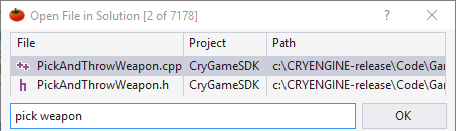
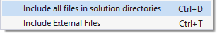

Open File in Solution
Find and open files in your solution fast with a dropdown in the VA View—a tool window of Visual Assist—or with a more powerful dialog (Shift+Alt+O). Filter results with multiple strings, negative filters, and path filters.

Open the context menu in the dialog to specify the domain of files to appear.

Learn more.